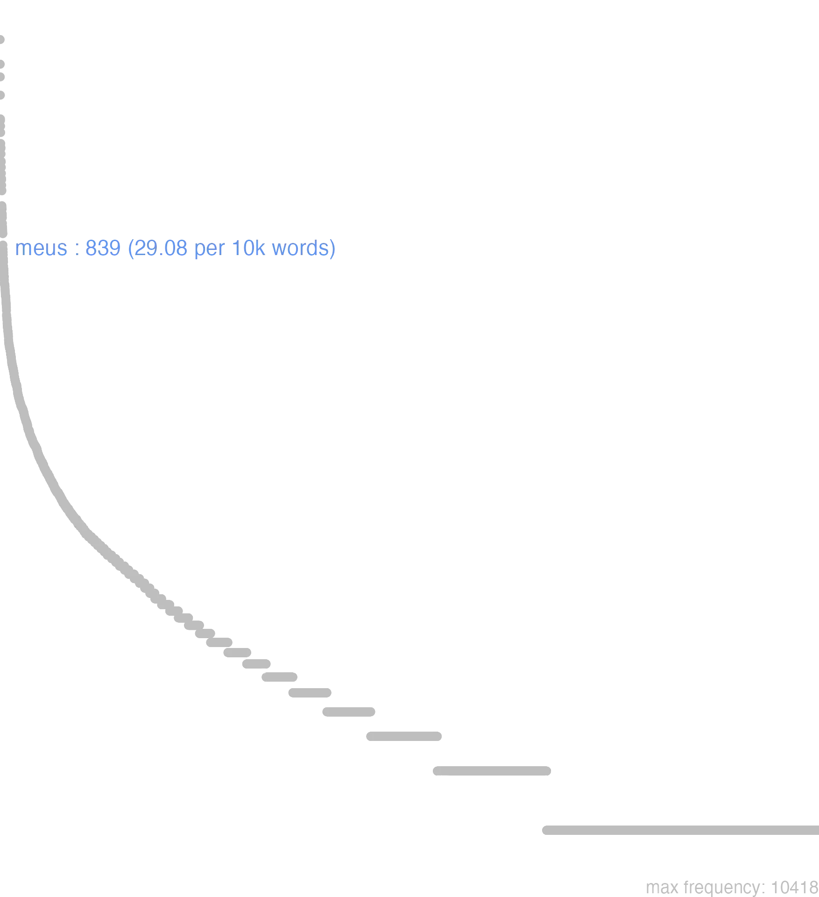

95 meus
95.0.0.1 bases lexicais
id: http://lila-erc.eu/data/id/lemma/112262
classe: determinante
paradigma: 1ª classe (tema em -a/o-)
outras grafias: meusmet, meuspte, mius
variantes do lema:
no data
mĕus
mĕa
mĕum
no data
95.0.0.2 dicionários tradicionais
meāmet
e meāpte
ant. abl. f. = mea ipsa.
meōpte
= meo ipso.
mepte
= meōpte.
pron. n. usado substant.
pronome possessivo
e meāpte
ant. abl. f. = mea ipsa.
meōpte
= meo ipso.
mepte
= meōpte.
1 A mim mesmo.
meum -ipron. n. usado substant.
1 I-Sing.: meu bem.
2 II-Pl.: meus bens Cíc. Par. 8.
pronome possessivo
1 I-Sent. próprio Meu, minha, que me pertence Cíc. Planc. 26.
2 II-Na língua afetiva Querido, que me é querido:
3 III-Em locuções:
4 III-Em locuções:
5 III-Em locuções:
[EXEMPLOS]
2
mi Tiro Cíc. Fam. 16, 20 “ó meu querido Tirão”.
3
meum est com infint.: “pertence-me, é meu direito, é meu dever”.
4
non est meum Ter. Heaut. 549 “não é minha maneira de”.
5
Meus est Plaut. Mil. 334 “é meu, está seguro”.
1 mī
voc. sing. m. de meus.
no data
Meus -a -um
1 Cic. meu, que me pertence.
[EXEMPLOS]
X
meum est Ter He cousa minha, eu sou o seu verdadeiro autor
meum est Plaut Convem-me
meus carnifex Ter Algoz, que me atormenta
meus sum Pers Sou livre, sou senhor da minha vontade
Meus -a -um
1 cousa minha
Meus -a um
1 cousa minha
95.0.0.3 dados de corpus
![This chart plots collocate by scoreSUBST, for the headword meus here are all the values plotted: collocate: lucilius; scoreSUBST: 0. collocate: oratio; scoreSUBST: 3. collocate: consulatus; scoreSUBST: 3. collocate: consilium; scoreSUBST: 2. collocate: frater; scoreSUBST: 3. collocate: periculum; scoreSUBST: 2. collocate: sententia; scoreSUBST: 2. collocate: labor; scoreSUBST: 2. collocate: de; scoreSUBST: 0. collocate: pro; scoreSUBST: 0. collocate: nomen; scoreSUBST: 2. collocate: defensio; scoreSUBST: 3. collocate: amicus; scoreSUBST: 2. collocate: dolor; scoreSUBST: 2. collocate: diligentia; scoreSUBST: 2. collocate: salus; scoreSUBST: 2. collocate: inimicus; scoreSUBST: 0. collocate: pomponius; scoreSUBST: 0. collocate: domus; scoreSUBST: 2. collocate: consuetudo; scoreSUBST: 2. collocate: casus; scoreSUBST: 2. collocate: officium; scoreSUBST: 2. collocate: epistula; scoreSUBST: 2. collocate: filius; scoreSUBST: 2. collocate: laus; scoreSUBST: 2. collocate: caput; scoreSUBST: 2. collocate: mos; scoreSUBST: 2. collocate: uox; scoreSUBST: 2. collocate: necessarius2; scoreSUBST: 2. collocate: pristinus; scoreSUBST: 0. collocate: mandatum; scoreSUBST: 2. collocate: Cicero; scoreSUBST: 0. collocate: spons; scoreSUBST: 2. collocate: meritum; scoreSUBST: 2. collocate: auris; scoreSUBST: 2. collocate: collega; scoreSUBST: 2. collocate: reditus; scoreSUBST: 2. collocate: perpetuus; scoreSUBST: 0. collocate: coniunx; scoreSUBST: 2. collocate: familiaris; scoreSUBST: 0. collocate: quasi; scoreSUBST: 0. collocate: inuidia; scoreSUBST: 2](./Media/wordcloud__xx109-101-117-115xx__BY_collocate_scoreSUBST.webp)
![This chart plots collocate by scoreADJ, for the headword meus here are all the values plotted: collocate: lucilius; scoreADJ: 4. collocate: oratio; scoreADJ: 0. collocate: consulatus; scoreADJ: 0. collocate: consilium; scoreADJ: 0. collocate: frater; scoreADJ: 0. collocate: periculum; scoreADJ: 0. collocate: sententia; scoreADJ: 0. collocate: labor; scoreADJ: 0. collocate: de; scoreADJ: 0. collocate: pro; scoreADJ: 0. collocate: nomen; scoreADJ: 0. collocate: defensio; scoreADJ: 0. collocate: amicus; scoreADJ: 0. collocate: dolor; scoreADJ: 0. collocate: diligentia; scoreADJ: 0. collocate: salus; scoreADJ: 0. collocate: inimicus; scoreADJ: 2. collocate: pomponius; scoreADJ: 3. collocate: domus; scoreADJ: 0. collocate: consuetudo; scoreADJ: 0. collocate: casus; scoreADJ: 0. collocate: officium; scoreADJ: 0. collocate: epistula; scoreADJ: 0. collocate: filius; scoreADJ: 0. collocate: laus; scoreADJ: 0. collocate: caput; scoreADJ: 0. collocate: mos; scoreADJ: 0. collocate: uox; scoreADJ: 0. collocate: necessarius2; scoreADJ: 0. collocate: pristinus; scoreADJ: 2. collocate: mandatum; scoreADJ: 0. collocate: Cicero; scoreADJ: 0. collocate: spons; scoreADJ: 0. collocate: meritum; scoreADJ: 0. collocate: auris; scoreADJ: 0. collocate: collega; scoreADJ: 0. collocate: reditus; scoreADJ: 0. collocate: perpetuus; scoreADJ: 2. collocate: coniunx; scoreADJ: 0. collocate: familiaris; scoreADJ: 2. collocate: quasi; scoreADJ: 0. collocate: inuidia; scoreADJ: 0](./Media/wordcloud__xx109-101-117-115xx__BY_collocate_scoreADJ.webp)
![This chart plots collocate by scoreVERBO, for the headword meus here are all the values plotted: collocate: lucilius; scoreVERBO: 0. collocate: oratio; scoreVERBO: 0. collocate: consulatus; scoreVERBO: 0. collocate: consilium; scoreVERBO: 0. collocate: frater; scoreVERBO: 0. collocate: periculum; scoreVERBO: 0. collocate: sententia; scoreVERBO: 0. collocate: labor; scoreVERBO: 0. collocate: de; scoreVERBO: 0. collocate: pro; scoreVERBO: 0. collocate: nomen; scoreVERBO: 0. collocate: defensio; scoreVERBO: 0. collocate: amicus; scoreVERBO: 0. collocate: dolor; scoreVERBO: 0. collocate: diligentia; scoreVERBO: 0. collocate: salus; scoreVERBO: 0. collocate: inimicus; scoreVERBO: 0. collocate: pomponius; scoreVERBO: 0. collocate: domus; scoreVERBO: 0. collocate: consuetudo; scoreVERBO: 0. collocate: casus; scoreVERBO: 0. collocate: officium; scoreVERBO: 0. collocate: epistula; scoreVERBO: 0. collocate: filius; scoreVERBO: 0. collocate: laus; scoreVERBO: 0. collocate: caput; scoreVERBO: 0. collocate: mos; scoreVERBO: 0. collocate: uox; scoreVERBO: 0. collocate: necessarius2; scoreVERBO: 0. collocate: pristinus; scoreVERBO: 0. collocate: mandatum; scoreVERBO: 0. collocate: Cicero; scoreVERBO: 0. collocate: spons; scoreVERBO: 0. collocate: meritum; scoreVERBO: 0. collocate: auris; scoreVERBO: 0. collocate: collega; scoreVERBO: 0. collocate: reditus; scoreVERBO: 0. collocate: perpetuus; scoreVERBO: 0. collocate: coniunx; scoreVERBO: 0. collocate: familiaris; scoreVERBO: 0. collocate: quasi; scoreVERBO: 0. collocate: inuidia; scoreVERBO: 0](./Media/wordcloud__xx109-101-117-115xx__BY_collocate_scoreVERBO.webp)
![This chart plots collocate by scoreADV, for the headword meus here are all the values plotted: collocate: lucilius; scoreADV: 0. collocate: oratio; scoreADV: 0. collocate: consulatus; scoreADV: 0. collocate: consilium; scoreADV: 0. collocate: frater; scoreADV: 0. collocate: periculum; scoreADV: 0. collocate: sententia; scoreADV: 0. collocate: labor; scoreADV: 0. collocate: de; scoreADV: 0. collocate: pro; scoreADV: 0. collocate: nomen; scoreADV: 0. collocate: defensio; scoreADV: 0. collocate: amicus; scoreADV: 0. collocate: dolor; scoreADV: 0. collocate: diligentia; scoreADV: 0. collocate: salus; scoreADV: 0. collocate: inimicus; scoreADV: 0. collocate: pomponius; scoreADV: 0. collocate: domus; scoreADV: 0. collocate: consuetudo; scoreADV: 0. collocate: casus; scoreADV: 0. collocate: officium; scoreADV: 0. collocate: epistula; scoreADV: 0. collocate: filius; scoreADV: 0. collocate: laus; scoreADV: 0. collocate: caput; scoreADV: 0. collocate: mos; scoreADV: 0. collocate: uox; scoreADV: 0. collocate: necessarius2; scoreADV: 0. collocate: pristinus; scoreADV: 0. collocate: mandatum; scoreADV: 0. collocate: Cicero; scoreADV: 0. collocate: spons; scoreADV: 0. collocate: meritum; scoreADV: 0. collocate: auris; scoreADV: 0. collocate: collega; scoreADV: 0. collocate: reditus; scoreADV: 0. collocate: perpetuus; scoreADV: 0. collocate: coniunx; scoreADV: 0. collocate: familiaris; scoreADV: 0. collocate: quasi; scoreADV: 2. collocate: inuidia; scoreADV: 0](./Media/wordcloud__xx109-101-117-115xx__BY_collocate_scoreADV.webp)
![This chart plots collocate by scoreFUNC, for the headword meus here are all the values plotted: collocate: lucilius; scoreFUNC: 0. collocate: oratio; scoreFUNC: 0. collocate: consulatus; scoreFUNC: 0. collocate: consilium; scoreFUNC: 0. collocate: frater; scoreFUNC: 0. collocate: periculum; scoreFUNC: 0. collocate: sententia; scoreFUNC: 0. collocate: labor; scoreFUNC: 0. collocate: de; scoreFUNC: 20. collocate: pro; scoreFUNC: 20. collocate: nomen; scoreFUNC: 0. collocate: defensio; scoreFUNC: 0. collocate: amicus; scoreFUNC: 0. collocate: dolor; scoreFUNC: 0. collocate: diligentia; scoreFUNC: 0. collocate: salus; scoreFUNC: 0. collocate: inimicus; scoreFUNC: 0. collocate: pomponius; scoreFUNC: 0. collocate: domus; scoreFUNC: 0. collocate: consuetudo; scoreFUNC: 0. collocate: casus; scoreFUNC: 0. collocate: officium; scoreFUNC: 0. collocate: epistula; scoreFUNC: 0. collocate: filius; scoreFUNC: 0. collocate: laus; scoreFUNC: 0. collocate: caput; scoreFUNC: 0. collocate: mos; scoreFUNC: 0. collocate: uox; scoreFUNC: 0. collocate: necessarius2; scoreFUNC: 0. collocate: pristinus; scoreFUNC: 0. collocate: mandatum; scoreFUNC: 0. collocate: Cicero; scoreFUNC: 0. collocate: spons; scoreFUNC: 0. collocate: meritum; scoreFUNC: 0. collocate: auris; scoreFUNC: 0. collocate: collega; scoreFUNC: 0. collocate: reditus; scoreFUNC: 0. collocate: perpetuus; scoreFUNC: 0. collocate: coniunx; scoreFUNC: 0. collocate: familiaris; scoreFUNC: 0. collocate: quasi; scoreFUNC: 0. collocate: inuidia; scoreFUNC: 0](./Media/wordcloud__xx109-101-117-115xx__BY_collocate_scoreFUNC.webp)
![This charts plots the frequency of lemma by author_Frequencies. The Cicero subcorpus registers the highest normalized frequency, with the value of 39.25 and an absolute frequency of 630. The Ovidius subcorpus follows, with a normalized frequency of 13.73 and an absolute frequency of 8. the subcorpus with the least normalized frequency is Suetonius with the normalized value of 0 and an absolute freqeuncy of 0. here are all the values: subcorpus: Caesar ; normalized frequency: 1 ; absolute frequency: 0.377672029609487. subcorpus: Cicero ; normalized frequency: 630 ; absolute frequency: 39.2464678178964. subcorpus: Horatius ; normalized frequency: 26 ; absolute frequency: 23.0885356540272. subcorpus: Ovidius ; normalized frequency: 8 ; absolute frequency: 13.7268359643102. subcorpus: Phaedrus ; normalized frequency: 18 ; absolute frequency: 27.3265522999848. subcorpus: Sallustius ; normalized frequency: 11 ; absolute frequency: 10.2031351451628. subcorpus: Seneca ; normalized frequency: 125 ; absolute frequency: 23.3291651891529. subcorpus: Suetonius ; normalized frequency: 0 ; absolute frequency: 0. subcorpus: Tacitus ; normalized frequency: 4 ; absolute frequency: 13.7315482320632. subcorpus: Vergilius ; normalized frequency: 6 ; absolute frequency: 11.5830115830116. subcorpus: Hieronymus ; normalized frequency: 10 ; absolute frequency: 22.4668613794653](./Media/barchart__xx109-101-117-115xx__lemma_BY_author_Frequencies.webp)
![This charts plots the frequency of lemma by genre_Frequencies. The Prosa.epistolográfica subcorpus registers the highest normalized frequency, with the value of 72.34 and an absolute frequency of 273. The Poesia.didática subcorpus follows, with a normalized frequency of 22.05 and an absolute frequency of 26. the subcorpus with the least normalized frequency is Prosa.histórica with the normalized value of 3.89 and an absolute freqeuncy of 16. here are all the values: subcorpus: Prosa.histórica ; normalized frequency: 16 ; absolute frequency: 3.89493415126951. subcorpus: Prosa.filosófica ; normalized frequency: 119 ; absolute frequency: 19.6042898799031. subcorpus: Prosa.oratória ; normalized frequency: 322 ; absolute frequency: 30.9160561865717. subcorpus: Prosa.epistolográfica ; normalized frequency: 273 ; absolute frequency: 72.3389596968653. subcorpus: Poesia.lírica ; normalized frequency: 26 ; absolute frequency: 21.8726339698831. subcorpus: Poesia.didática ; normalized frequency: 26 ; absolute frequency: 22.0544575451692. subcorpus: Poesia.trágica ; normalized frequency: 41 ; absolute frequency: 35.6150104239055. subcorpus: Poesia.épica ; normalized frequency: 6 ; absolute frequency: 11.5830115830116. subcorpus: Prosa.ficcional ; normalized frequency: 10 ; absolute frequency: 22.4668613794653](./Media/barchart__xx109-101-117-115xx__lemma_BY_genre_Frequencies.webp)
![This charts plots the frequency of lemma by period_Frequencies. The I.a.C. subcorpus registers the highest normalized frequency, with the value of 31.37 and an absolute frequency of 674. The I.a.C. subcorpus follows, with a normalized frequency of 31.37 and an absolute frequency of 674. the subcorpus with the least normalized frequency is II.d.C. with the normalized value of 10.47 and an absolute freqeuncy of 4. here are all the values: subcorpus: I.a.C. ; normalized frequency: 674 ; absolute frequency: 31.3707237607633. subcorpus: I.d.C. ; normalized frequency: 151 ; absolute frequency: 23.0992810157565. subcorpus: II.d.C. ; normalized frequency: 4 ; absolute frequency: 10.4712041884817. subcorpus: IV.d.C. ; normalized frequency: 10 ; absolute frequency: 22.4668613794653](./Media/barchart__xx109-101-117-115xx__lemma_BY_period_Frequencies.webp)
Quintum fratrem meum fac diligas
Cic.Att.3.13.2
Faz por estimar o meu irmão Quinto. [JDD]
mea mandata de domo curabis
Cic.Att.4.7.3
Cuidarás dos meus encargos em relação à casa. [JDD]
tu es Filius meus dilectus
Vulg.Marc.1.11
tu és meu Filho amado. [JDD]
felix ad aures nuntius uenit meas
Sen.Ag.397a
Feliz notícia chega aos meus ouvidos. [JDD]
ecce mater mea et fratres mei
Vulg.Marc.3.34
Eis minha mãe e meus irmãos. [JDD]
o rem minime aptam meis moribus
Cic.Att.5.10.3
Ó coisa nem um pouco adequada para os meus costumes! [JDD]
spero meos omnis servire laudi meae
Cic.Att.5.14.2
Espero que todos os meus estejam servindo ao meu prestígio. [JDD]
malo te legas quam epistulam meam
Sen.Ep.24.21
Prefiro que leias a ti do que a minha carta. [JDD]
ego apud improbos meam retinuissem invidiam
Cic.Att.2.19.4
eu, diante dos ímprobos; tinham mantido o ódio a mim. [JDD]
me mi Pomponi valde paenitet vivere
Cic.Att.3.4
Eu, meu querido Pompônio, estou profundamente arrependido de viver [JDD]
quae res etiam auxit dolorem meum
Cic.Att.4.6.2
Esse fato inclusive aumentou a minha dor. [JDD]
effare casus quis rates hausit meas
Sen.Ag.414
Diz: que desgraça aniquilou esses barcos? [JDD, de outra edição]
Sic sine labore venter impletur meus .
Phaed.3.7
Assim sem esforço a minha barriga vai se enchendo.” [JDD]
ita est mi Lucili cito accedimus opinioni
Sen.Ep.13.8
Assim é, meu querido Lucílio: rapidamente nos submetemos à opinião. [JDD]
non intellegitis non auditis meam sententiam flagitari
Cic.Phil.7.14.4
Não entendeis, não ouvis que minha proposta é exigida? [JDD]
quod quidem meum consilium minime obscurum fuit
Cic.Marc.15
E, na verdade, esse meu intento não foi nem um pouco oculto. [JDD]
te ut plane Deiotaro reconciliet oratio mea
Cic.Deiot.35
É para que o meu discurso te reconcilie completamente com Dejótaro. [JDD]
hoc ante omnia fac mi Lucili disce gaudere
Sen.Ep.23.3
Faz isto antes de tudo, meu querido Lucílio: aprende a satisfazer-te. [JDD]
longe mea discrepat istis et uox et ratio
Hor.S.1.6.92
Minha voz e minha razão discrepam muito desses. [JDD]
inimici mei mea mihi non me ipsum ademerunt
Cic.Att.3.5
Meu inimigos tomaram os meus bens, não a mim mesmo. [JDD]
omnia ad senatum mea sententia reiciam quaecumque postulabit Antonius
Cic.Phil.12.28.7
Vou remeter ao senado, com meu parecer, tudo o que Antônio exigir seja o que for. [JDD]
hortaris etiam sponte deponam ut mea tam grauia regna
Sen.Oed.678
Até mesmo me exortas a que eu espontaneamente abandone o meu tão pesado reino? [JDD]
sed tamen meorum periculorum rationes utilitas rei publicae uincat
Cic.Catil.4.9.6
Mas, mesmo assim, que o bem da república esteja acima dos motivos de meus perigos. [JDD]
hic mihi primum meum consilium defuit sed etiam obfuit
Cic.Att.3.15.5
Aqui me faltou pela primeira vez o meu discernimento, mas ainda me danou. [JDD]
domum meam quod crebro invisis est mihi valde gratum
Cic.Att.4.5.2
É para mim muito grato que olhes minha casa com frequência. [JDD]
Cicero meus modestissimus et suavissimus puer tibi salutem dicit
Cic.Att.5.9.2
Meu Cícero, modestíssimo e suavíssivo garoto, te saúda. [JDD]
an quia non condemnaui sententia mea duo consules sum reprehendendus
Cic.Dom.9
9 Por acaso devo ser repreendido porque não condenei com meu parecer os dois cônsules? [JDD]
petivi etiam pro meis in civitatem beneficiis ut negotium conficerent
Cic.Att.5.21.11
pedi até mesmo pelos meus benefícios na cidade que concluíssem o negócio. [JDD]
tuta iam opperiar meos hostes et ultro uulneri opponam caput
Sen.Ag.945
Agora, em segurança, vou esperar meus inimigos e oferecer espontaneamente minha cabeça ao golpe. [JDD]
et fratres meos inquit quod erant conscii in uincla coniecit
Cic.Deiot.22
22 “E os meus irmãos,” diz “porque eram sabedores, ele os meteu na prisão.” [JDD]
parcite oculis saltem meis et aliquam ueniam iusto dolori date
Cic.Phil.12.19.4
Poupai, ao menos, os meus olhos e dai alguma vênia para a minha justa dor. [JDD]
de meis scriptis misi ad te Graece perfectum consulatum meum
Cic.Att.1.20.6
Dos meus escritos, te mandei já terminado o meu consulado em grego. [JDD]
dies fere nullus est quin hic Satyrus domum meam ventitet
Cic.Att.1.1.3
Quase não passa um dia sem que este Sátiro apareça em minha casa. [JDD]
quid est quare ego ulla uerba coram amico meo retraham
Sen.Ep.3.3
Que motivo há para que eu retenha algumas palavras na presença de meu amigo? [JDD]
deinde te quasi me alterum et simul meae culpae socium quaero
Cic.Att.3.15.4
em seguida busco a ti como que meu segundo eu e, ao mesmo tempo, sócio de minha culpa. [JDD]
animaduerti enim iudices audiri a uobis meum familiarem L. Herennium perattente
Cic.Cael.25
Pois eu notei, juízes, que meu amigo Lúcio Herênio era ouvido por vós muito atentamente. [JDD]
ne illi uehementer errant si illam meam pristinam lenitatem perpetuam sperant futuram
Cic.Catil.2.6.6
Ora, eles se enganam redondamente, se esperam que aquela minha primeira brandura será para sempre. [JDD]
hoc nomine satis honestas pro meo casu spes relicuae dignitatis conseruandae sum secutus
Sal.Cat.35.4
Por esse motivo, segui as esperanças, bastante honrosas em minha desgraça, de conservar o que resta de minha dignidade. [JDD]
tu pande uiuat coniugis frater mei et pande teneat quas soror sedes mea
Sen.Ag.404a
Tu, revela se vive o irmão de meu esposo e revela que morada tem a minha irmã. [JDD]
quid igitur profectus est uir fortissimus meus conlega et familiaris A. Hirtius consul
Cic.Phil.7.12.1
Por que, então, esse homem valorosíssimo, meu colega e amigo íntimo, o cônsul Aulo Hírcio partiu? [JDD]
uideor mihi iecisse fundamenta defensionis meae quae firmissima sunt si nituntur iudicio suorum
Cic.Cael.5
Tenho a impressão de que lancei os fundamentos de minha defesa, que são bem sólidos, já que se apoiam no juízo de seus concidadãos. [JDD]
accedunt eodem multa priuata magna eius in me merita mea quaedam officia in illum
Cic.Phil.13.7.11
Acrescentam-se a isso muitos e grandes favores particulares dele para comigo e alguns serviços meus para com ele. [JDD]
ad summam laetitiam meam quam ex tuo reditu capio magnus illius adventus cumulus accedet
Cic.Att.4.19.2
À minha imensa alegria que tomo por teu regresso a sua vinda acrescenta um grande montão. [JDD, de outra edição]
Verum inquis tanti non est ingenium tuum , Momentum ut horae pereat officiis meis .
Phaed.3.pr
“Mas”, dizes, “o teu talento não vale tanto assim, para que se perca um instante de minhas obrigações”. [JDD]
ueritus sum ne meus repentinus ad meos necessarios aduentus suspicionis aliquid adferret si essem commoratus
Cic.Phil.1.7.8
Tive receio de que a minha repentina chegada à casa de meus amigos causasse alguma suspeita, se eu tivesse demorado. [JDD]
vereor enim ne re iam desperata legas ut haec mea diligentia miserabilis tibi aliis inridenda videatur
Cic.Att.3.23.4
pois receio que leias, quando meu caso já for sem esperança, de modo que esta minha preocupação pareça lastimável para ti, risível para os outros. [JDD, de outra edição]
utinam quidem uirorum optimus pater meus minus maiorum consuetudini deditus uoluisset te praeceptis sapientiae erudiri potius quam imbui
Sen.Helv.17.4
Quem dera que meu pai, o melhor dos maridos, tivesse sido menos devotado ao costume dos antepassados e tivesse querido que tu fosses instruída nos preceitos da sabedoria em vez de apenas ser iniciada. [JDD]
95.0.0.4 Diagrama de Zipf
